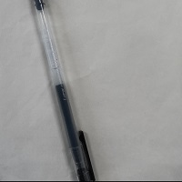

C++ Primer Plus
为什么我要做这个页面
C++ Primer Plus是一本教程类书籍，我又喜欢计算机类知识，C++ Primer Plus应该是我第一本有较位置体系的C++的书籍，是我最珍惜的书之一，所以在她同意后，我把这件事写在这里(我知道她不是故意的)，可惜我的书(虽然没什么大碍)
"作案"
下图是损坏我书籍的笔
下图是我的书籍
虽然并无大碍，但确实心痛
当时没有发火，有点激动，也不知道为什么就很快平静下来
经过她同意后，作案人是：Jiieoo.
现在，这件事作为一个回忆，被永久保存在此，这份回忆可能在网站上迁移，但不会消失
可能在多年以后的一天已经忘记这件事，当我打开这里就又会想起来，原来我曾经也有这样一个同学啊。真是美化的回忆啊